📊 掲示板投稿の詳細分析による投資情報（静的版）
📖 このダッシュボードの読み方（初めての方向け）
① 株価ヘッダー — 現在値・騰落率と最終更新時刻です。裏側のデータは 1分間隔のタスクで自動生成され、このページ自体も60秒毎に ブラウザが自動的に再読み込みして最新のスナップショットを表示します（手動更新は不要です）。 取引時間中に更新が止まっている可能性がある場合は「⚠️データの更新が…」という注意書きが 表示されます。
② タブ「🤖 AI考察」（先頭・最初に開くタブ） — 他のタブに表示されている集計値 (株価・掲示板の強弱比率・9指標の発火状況・ボラレジーム・PTS/ADR等)だけをもとにAIが 生成した文章です。個別の投稿内容やユーザー名は一切含まれません。
③ タブ「🔥 メーター・シグナル」 — 灼熱メーター／阿鼻叫喚メーターは掲示板の 投稿内容から算出した「過熱度」「セリングクライマックス度」の合成指標(売買のシグナル ではありません)。ボラ・レジーム帯は現在の値動きの荒さが「平穏〜急変」のどの水準にあるか の目安で、データ蓄積初期は「較正中」と表示されます(異常ではなく閾値を学習している途中)。 PTS・米国ADR(表示される場合のみ)は東証の取引時間外の値動きの参考情報です。シグナル発火 状況(9指標)は投稿の偏り・語彙・投稿量などを統計的にチェックした一覧で、🟢OK=平常範囲内 ／🟠警戒=やや偏りが大きい／🔴発火=閾値超過、を示す記述的なラベルです。
④ タブ「📅 本日の推移」 — 本日の推移(価格推移10分足・板の買い/売り総計60秒 平均・本日のセンチメント推移)を東証立会時間の同じ横軸で並べています。価格推移の見出し下 には本日の高値・安値も表示します。過去24時間のセンチメント推移(暦日をまたぐローリング窓)も このタブにあります。
⑤ タブ「📐 値動きの目安」 — 直近の日次終値リターンの標準偏差(SD) から算出した値幅の目安(支持線・抵抗線)と、日次の「値動き÷執行コスト」倍率の推移を表示します。 いずれも到達を予測するものではなく、値幅の大きさの目安です。
⑥ タブ「🌐 市場・ニュース」 — 海外半導体ピア・当日の値動きの型・執行コスト比較 といった市場コンテキストと、AI半導体に関する関連ニュース(直近24時間)を表示します。
⑦ タブ「📈 過去14日」 — 過去14日間の推移(価格推移の日足ローソク足・出来高、 センチメント推移の強気/弱気/中立の3本の比率と投稿量)を表示します。
⑧ タブ「📊 統計評価」 — 掲示板センチメント5指標と翌1日/3日/5日リターンの 相関係数r・中央値分割の差(pt)・t値のマトリクスです。緑=相関がプラス・赤=マイナス、 太字は|t|≥2程度の目安です。探索的分析であり確定した予測ではありません。
件数・数量系のグラフ(投稿量・板の買い/売り総計等)に統計的な外れ値が自動検出された場合は、 グラフ直下に「⚠️自動検出された外れ値」として注記が表示されます(値そのものは書き換えません)。
本ダッシュボードは研究・エンタメ用途の情報提供であり、投資助言ではありません。
更新時刻: 2026-11-27T21:47:06（データは1分間隔で自動生成され、このページも 60秒毎に自動再読み込みされます）
👀 累計閲覧数: 15,568
🤖 AI考察
🗓 AI考察の予定
- 平日の立会日に、寄り前 08:50／寄り直後 09:10／前場引け前 11:30／大引け後 15:45 の4時点で考察を更新します（考察はClaude(AI)が書きます）。
- 土日祝などの休場日は考察を書きません。
- 時点の間は、数値のみを約10分ごとに更新します（文章は次の時点まで更新されません）。
- 次の予定: 11-30 08:50（寄り前）／直近の更新: 11-27 09:10（自動生成）
📊 数値要約｜21:47 更新
- 株価: 8,450円（前営業日終値比 +8.86%）
- 掲示板: 強気 47.4%／弱気 42.8%／中立 9.8%・投稿 13,333件（約606件/時）
- シグナル: 平常＝灼熱メーター(過熱)(20.7)・そう思う大量票(37)・イナゴ語彙(euphoria)(3.9)・ネームド集中(0.04)ほか
- 板・価格・見立て採点（参考・機械採点）: 板 買い/売り比 0.77（11/27 15:30時点）／約定ティック直近値 8,450円・VWAP距離 +213.9円（詳細は下の『板・価格まわり・見立ての採点』）
- 変化の読み: PTS: 1時間では下落(-0.34%)だが直近5分は戻している(+0.26%)＝下落基調の中の切り返し(短い窓だけの動きで、続くかは未確認)
- 変化の読み: DEX: ほぼ横ばい(5分 -0.01%・1時間 +0.11%)
- 変化の読み: 東証最終値比の水準: PTS -0.82%・DEX -0.75%→いずれも東証最終値より下＝次の寄り付きが終値より低く始まる場合の水準感を示す材料(予告ではない)
- 変化点: 前回の数値要約から大きな変化なし
| 市場 | 最終値(円) | 終値比 | 5分 | 15分 | 1時間 | 最終約定 |
|---|---|---|---|---|---|---|
| 東証(立会時間外) | 8,450 | +8.86% | -0.59% | +0.72% | +1.43% | 11/27 15:30 |
| PTS | 8,381 | -0.82% | +0.26% | +0.37% | -0.34% | 11/27 21:46 |
| 米国ADR(立会時間外) | 6,973 | — | +0.90% | +1.62% | +0.01% | 11/26 05:59 |
| DEX | 8,386 | -0.75% | -0.01% | +0.19% | +0.11% | 11/27 21:50 |
強気・弱気は機械判定（辞書＋軽量モデル）の値です。日単位の向きはLM判定と近く（相関0.8台）、時間単位は粗い点に注意してください。
🧭 板・価格まわり・見立ての採点（参考）
- 11/27 15:30時点｜買い総量 3,811.0万株／売り総量 4,928.1万株／比 0.77／差 -1,117.1万株
- 大引け(15:30)後は板が更新されないため、30秒〜5分の窓別の増減は意味がなく表示しません(上は大引け時点の板)。
- 11/27 15:30時点｜約定ティック直近値 8,450円(ヘッダーの株価とは取得元・時刻が異なる)／VWAP 8,236.1円（距離 +213.9円・+2.60%）
- 出来高 21,813.9万株／売買代金(試算) 17,966.1億円／日中高値 8,562円・安値 7,821円
板情報・約定ティック(遅延あり)から作成。売買代金は試算(VWAP×出来高)。
前回集計(2026-11-27T21:36:54)との比較
■ 285Aの寄り付き：時間外の水準より低い値で始まった
285Aの寄り付きは09:03:01の7,923円で、今日も09:00より3分遅れました（直近は11-20が09:11:53、11-24が09:10:53、11-25が09:18:02、11-26が09:06:01）。前営業日（11-26）の終値は7,762円です。寄り前の時間外は、PTSが8,088円（東証最終値比+4.20%・08:31）、DEXが8,076円（+4.04%・08:36）でしたが、寄り値はどちらの水準よりも低くなりました。DEXは09:00時点で+4.16%、その後は5分で-0.69%と押しており、PTSも09:00前後に+4.88%（08:56）をつけていたため、時間外で見えていた水準を寄り付きの板がそのまま引き継がなかった形です。ただし、PTSは取引が疎で、DEXは板が薄く、時間外の水準は寄り付きの値を予告するものではありません。
■ 寄り後の値位置
寄り付き後は、09:03:02に安値7,870円、09:08:14に高値8,060円をつけ、09:09:30時点は7,989円です（場中で終値は未確定）。寄りから約8分で、安値から高値まで190円の幅が出ています。上の水準では、出来高ノードの7,998円のすぐ下にあり、高値8,060円はその上です。下の水準は前営業日の終値7,762円で、現在値はそれより227円上です。時間外の水準（約8,076〜8,088円）との比較では、現在値はまだ下にあります。これらは値位置の記述であり、この先の値動きを示すものではありません。
■ 地合いスコアは中立
地合いスコアは約-1（中立）で、前回の11-26 15:35時点の約-15（ショート寄り）から変わりました。米国は昨日が感謝祭で休場だったため、米国由来の3項目（SOX・マイクロン・サンディスク）を今朝の算出から除いており、メモリ軸は韓国2社（SKハイニックス+2.23%・サムスン電子+0.35%）で約+15pt、キオクシア固有のイベント（守り）は-10pt、ニュース温度は約-8ptです。米国市場は本日も13:00 ETで閉まる短縮取引で、日本時間の夜の米国側の材料は通常日より限られる可能性があります。
■ 需給と今日の予定
信用倍率は11-25基準で24.10倍（前営業日15.44倍）、買い残5,070万株に対し売り残は210万株です。今日は、親会社のキオクシアホールディングスが子会社キオクシアから配当2兆2,149億円を受領する日です（11-25の適時開示）。空売り価格規制は、東証の規則どおりなら11-26が最終日で、今日は対象外です（取引所の発表で確認が必要です）。
11-27 09:10 時点の考察（生成時刻: 2026-11-27T09:10:55）
🔥😱 2大メーター・ボラレジーム
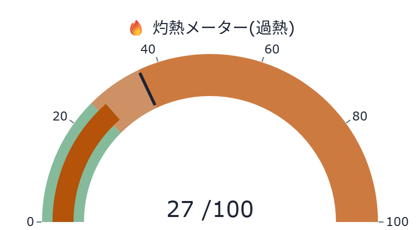
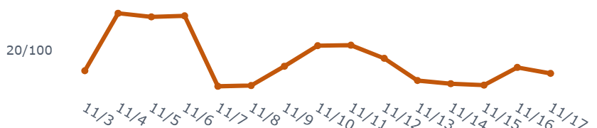
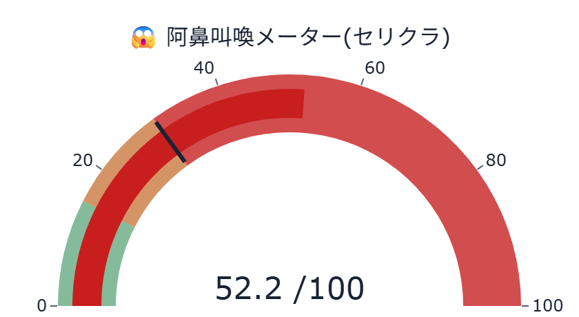
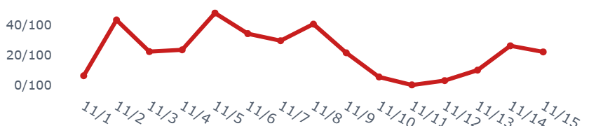
- ⚪ 心理発火(阿鼻叫喚指数)
- ⚪ 板買い転換(直近3分)
- ⚪ 出来高＋安値切り上げ
ボラ・レジーム帯
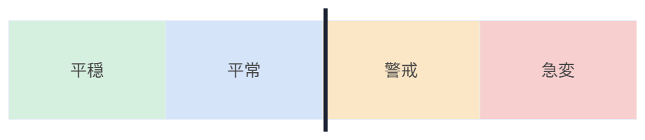
現在レジーム: 較正中 (BVP=0.461)
PTS=東証取引時間外の私設取引システム／ADR=米国預託証券／DEX=分散型取引所(Hyperliquid)の24時間取引・円換算(東証終値比。大引け後(15:30以降)のDEXの終値比は当日の確定終値基準です。ADR・PTSは東証最終値比)。翌営業日の値動きの参考情報です(それ自体が売買シグナルではありません)。
🎯 シグナル発火状況（9指標）
📖 この一覧の読み方（用語）
掲示板の投稿を集計した9つの指標が、統計的なしきい値を超えたかどうかを示す一覧です。 「発火」は売買のシグナルではなく、「統計的に見て平常時より偏りが大きい状態」を示す記述的な警告ラベルです。

掲示板は方向よりボラを予測する傾向が文献で報告されています(Antweiler & Frank, 2004)。
📅 本日の推移（イントラデイ）
本日の価格推移（10分足ローソク足・出来高）
本日の高値 8,562円 ／ 安値 7,821円
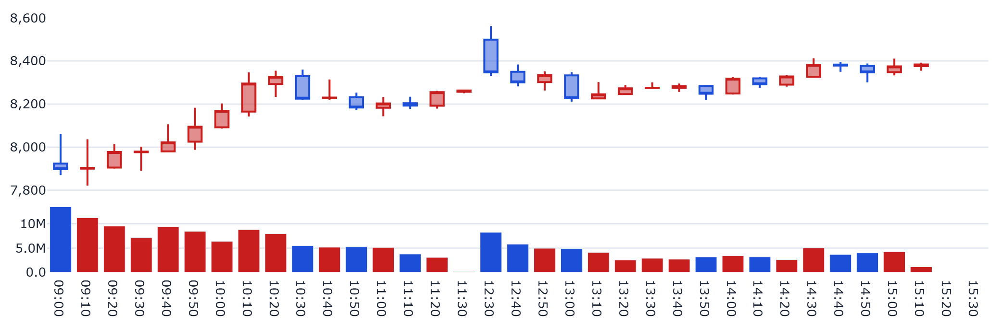
板の買い・売り総計（成行込み全価格帯・60秒平均）
📖 板の買い・売り総計の読み方
表示10本の気配だけでなく、外側の気配(OVER/UNDER)と成行注文も含めた板全体の数量合計です。 値は直近60秒間の平均。需給の偏りを直接示す指標ではありません。
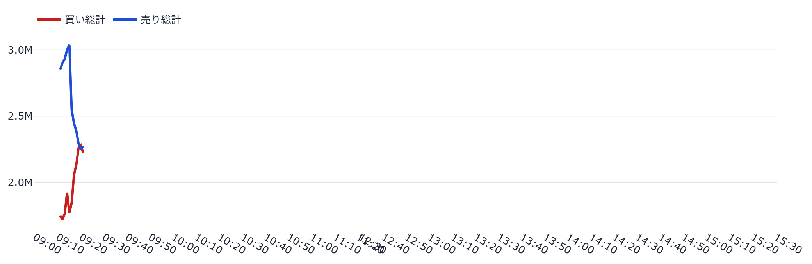
本日のセンチメント推移（10分毎・強気/弱気比率・投稿量）
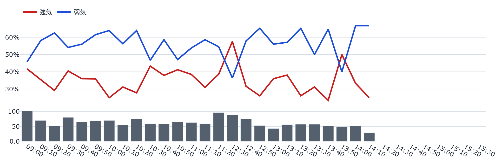
過去24時間のセンチメント推移（10分毎・強気/弱気比率・投稿量）
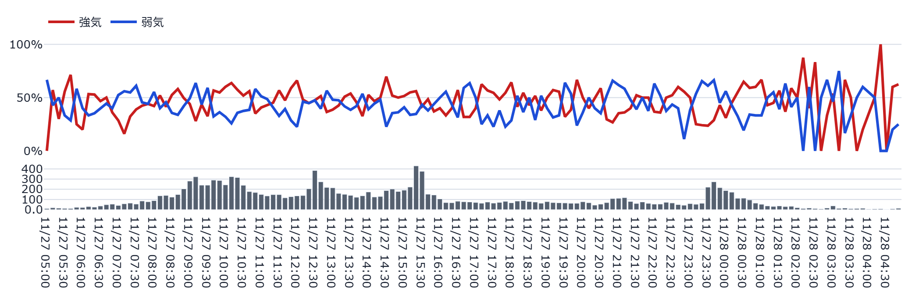
📐 値動きの目安
支持線・抵抗線の目安（SD単位）
| 値幅の目安 | 上側の水準 | 下側の水準 |
|---|---|---|
| 0.5SD（±4.31%） | 8,815円 | 8,085円 |
| 1.0SD（±8.63%） | 9,179円 | 7,721円 |
| 1.5SD（±12.94%） | 9,544円 | 7,356円 |
直近14日間の最高値（2026-11-11・9,571円）からの乖離: -11.71%
SDは直近14日間の日次終値リターンの標準偏差（8.63%/日）から算出した値幅の目安であり、到達を予測するものではありません。
本日の値動き ÷ 執行コストの推移
| 日付 | 前日比 | 値動き÷執行コスト |
|---|---|---|
| 2026-11-13 | -2.25% | 約81.4倍 |
| 2026-11-16 | -7.69% | 約278.6倍 |
| 2026-11-17 | -5.08% | 約183.9倍 |
| 2026-11-18 | +0.74% | 約26.8倍 |
| 2026-11-19 | +3.07% | 約111.1倍 |
| 2026-11-20 | -11.66% | 約422.3倍 |
| 2026-11-24 | +9.95% | 約360.5倍 |
| 2026-11-25 | -14.18% | 約513.7倍 |
| 2026-11-26 | +12.57% | 約455.6倍 |
| 2026-11-27 | +8.86% | 約321.1倍 |
執行コスト(往復実効費用・実測2.76bp・37日分の板ウォーク実測)は日によらず一定の値として比較しています。倍率が大きいほど値動きが執行コストに対して相対的に大きかったことを示す目安であり、実際に利益を確保できることを意味しません。
🌐 市場コンテキスト・海外要因
市場コンテキスト
海外ピアの値動き・本日の値動きの型はいずれも事実の記述であり、翌営業日の値動きを予測するものではありません。値動き÷執行コストは値幅の大きさの目安であり、実際に利益を確保できることを意味しません。
📰 関連ニュース（直近24時間）
各見出しから元記事(Google News経由)へ移動できます。
📈 過去14日間の推移
過去14日間の価格推移（日足ローソク足・出来高）
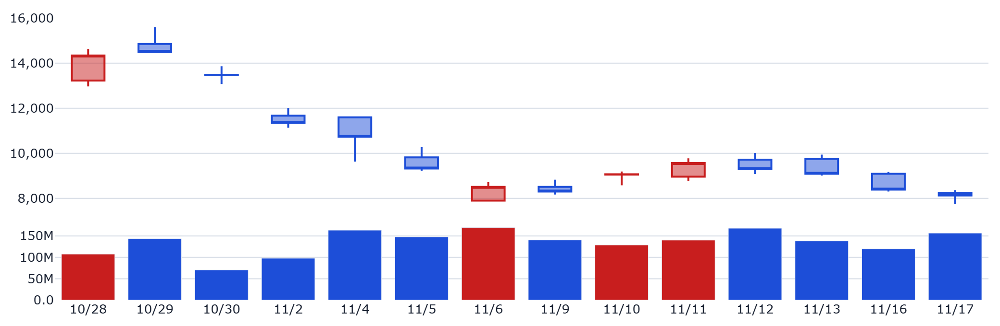
過去14日間のセンチメント推移（強気/弱気/中立比率・投稿量）
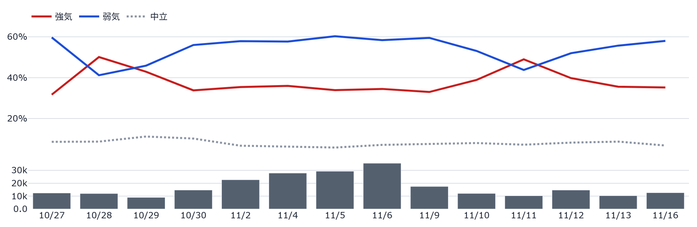
掲示板センチメント×株価 統計評価（研究）
- このタブは「掲示板の気分(煽り度・強気比率・投稿量)と、その後の株価の値動きに関係があるのか」を過去データで調べた結果です。
- 関係があるとしても、どの程度当てになるのかを、指標ごとに ✅信頼できる／🟡まだ不明／➖関係なし で先頭に示します。
- 結論は「予測に使える」という意味ではありません。調べた期間が短く、検証中の研究です。
指標ごとの結論（5指標の結論: ✅信頼できる 0／🟡まだ不明 3／➖関係なし 2）
📖 用語の意味と目安の読み方（t値・相関係数・p値・サンプル数）
| 用語 | 意味 | 目安の読み方 |
|---|---|---|
| 相関係数 r | 指標が高い日ほど、その後の株価リターンも高い(+)か低い(−)かを -1〜+1 で表した値。 | rの絶対値が0.1未満=ほぼ関係なし／0.1〜0.3=弱い関係／0.3以上=やや関係あり(ただし件数が少ないと偶然でも出る) |
| t値 | 「指標が高い日のグループ」と「低い日のグループ」の平均リターン差が、偶然でも出る程度かを測る値。 | tの絶対値が2未満=偶然の範囲／2〜3=要注意(まだ不明)／3以上=偶然とは考えにくい(ただし15個の中の1つだけなら偶然も混ざる) |
| p値 | もし本当は関係がなかったとして、偶然でここまで差が出る確率。小さいほど偶然では説明しにくい。 | このタブでは表示せず、t値で代用。目安は tの絶対値≈2 でp値およそ5%(20回に1回は偶然で出る水準) |
| 高群−低群の差(pt) | 指標が高い日と低い日で、その後のリターンの平均が何ポイント違うか。 | プラスなら「指標が高い日のほうがその後高い」。t値が小さければ偶然の差の可能性が高い |
| サンプル数 n | 何日分のデータで計算したか。 | 30日未満は信用できない。多いほど安定(今回は約40日分=少なめ) |
結論の判定基準: ✅=件数30以上・rとグループ差の向きが一致・rの絶対値0.3以上・tの絶対値3以上／➖=全期間でrの絶対値0.1未満かつtの絶対値2未満／🟡=それ以外。
⚠️ ご注意: この表の数字は過去の傾向の統計で、将来の値動きを予測できるとは限りません(予測に使えるかはこれから前向きに検証中)。 指標5つ×期間3つ=15マスを同時に見ているため、偶然で数マスは目立ちます。1つだけ目立つマスは偶然の可能性が高いです。 rとt値は別々の計算(rは全日の並び、tは高群/低群の2分割)なので、向きが食い違うことがあります。その場合は「まだ不明」にします。 売買の推奨ではありません。
📋 詳細表（相関r・高群−低群の差・t値）を開く
| 指標 | 翌1日 | 翌3日 | 翌5日 |
|---|---|---|---|
| 売り煽り度 | r=0.03 -5.42pt / t=-2.17 | r=0.10 -6.31pt / t=-1.41 | r=0.11 -5.48pt / t=-1.02 |
| 買い煽り度 | r=0.27 +3.49pt / t=1.34 | r=0.18 +1.89pt / t=0.41 | r=-0.04 -2.27pt / t=-0.41 |
| 悲鳴・投げ売り度 | r=0.08 +0.70pt / t=0.26 | r=-0.00 -0.77pt / t=-0.17 | r=-0.01 +2.18pt / t=0.40 |
| 強気比率 | r=0.05 +3.03pt / t=1.15 | r=0.05 +3.75pt / t=0.82 | r=0.01 +0.18pt / t=0.03 |
| 投稿数(出来高) | r=0.19 +2.25pt / t=0.86 | r=0.35 +0.23pt / t=0.05 | r=0.23 +0.66pt / t=0.12 |
売り煽り度/買い煽り度/悲鳴・投げ売り度/強気比率/投稿数(出来高)の各指標と、翌1日/3日/5日リターンの相関係数r・中央値分割(高群-低群)の差(pt)・t値。探索的分析であり確定した予測ではありません。指標×ホライズンの多重比較(計15セル)であり、|t|が大きいセルも偶然の可能性を排除できません。色は相関係数rの符号(高群ほど翌日リターンが高い=緑・低い=赤)、|t|≥2程度を目安に太字で強調していますが、統計的に確定した優位性ではありません。データ期間: 2026-03-12~2026-09-04 / 算出日: 2026-09-07。正本の計算ロジック: research/comprehensive_stats.py。
⚠️ 本情報は掲示板投稿を統計的に集計したものであり、投資助言ではありません。個別の投稿内容は含まれていません。研究・エンタメ用途です。
板・約定ティックは遅延あり。売買の推奨ではありません。
見立ての採点は参考・機械採点で、売買の推奨ではありません。
※研究・エンタメ用途・未検証。売買シグナルではありません。
※ニュース見出しの要約であり、投資助言ではありません。